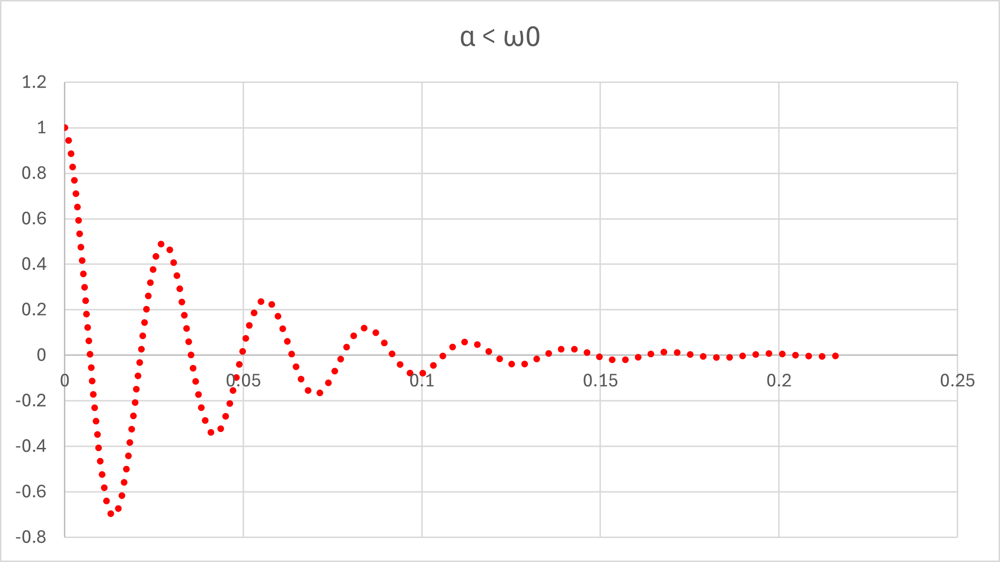

１７ー１．ステップ関数（RLC回路），初期条件，特に，微分を0としてみる
次は，
I(0)=I0, I'(0)=0
という条件で計算したらどうなるか，を計算していきましょう．
これは，（たぶん），電気回路ではなかなか見られない条件かと思います．
（ある電圧を入れて安定した状態から，オフにしたら再現できるかな？）
どちらかというと，
慣性力・粘性力・弾性力
が働く物理現象としての方が馴染みがあるかもしれません（粘性を無視できない状態での振り子の減衰など）
それぞれの条件について計算していきましょう
・α < ω0
ここに記したように，平方根内が虚数となるので，
\(\Large \displaystyle \sqrt{ \alpha^2 - \omega_0^2} = j \ \sqrt{ \omega_0^2 - \alpha^2 }\equiv j \ \omega\)
とします．電流は，
\(\Large \displaystyle I(t) = e^{ - \alpha t} \cdot \left[ A \cdot e^{ j \omega t}+ B \cdot e^{ -j \omega t} \right] \)
となります．
初期条件から，
\(\Large \displaystyle I(0) = e^{- \alpha \cdot 0} \cdot \left[ A \cdot e^{ j \omega \cdot 0} + B \cdot e^{ -j \omega \cdot 0} \right] = A+B= I_0 \)
\(\Large \displaystyle I'(t) = - \alpha \ e^{- \alpha t} \cdot \left[ A \cdot e^{ j \omega t} + B \cdot e^{ -j \omega t} \right] + e^{- \alpha t} \cdot j \omega \left[ A \cdot e^{ j \omega t} - B \cdot e^{ -j \omega t} \right] \)
\(\Large \displaystyle I'(0) = - \alpha \ e^{- \alpha \cdot 0} \cdot \left[ A \cdot e^{ j \omega \cdot 0} + B \cdot e^{ -j \omega \cdot 0} \right] + e^{- \alpha \cdot 0} \cdot j \omega \left[ A \cdot e^{ j \omega \cdot 0} - B \cdot e^{ -j \omega \cdot 0} \right] \)
\(\Large \displaystyle= - \alpha (A+B)+j \omega (A-B) \)
\(\Large \displaystyle= j \omega (A-B) = 0 \)
\(\Large \displaystyle A + B = I_0 \)
\(\Large \displaystyle A-B = 0 \)
\(\Large \displaystyle A = \frac{ 1}{2} I_0 \)
\(\Large \displaystyle B = \frac{ 1}{2} I_0 \)
したがって，
\(\Large \displaystyle I(t) = e^{- \alpha t} \cdot \left[ A \cdot e^{ j \omega t} + B \cdot e^{ -j \omega t} \right]\)
\(\Large \displaystyle = \frac{ 1}{2} \cdot I_0 \cdot e^{- \alpha t} \cdot \left[ e^{ j \omega t} + e^{ -j \omega t} \right]\)
\(\Large \displaystyle = I_0 \cdot e^{- \alpha t} \cdot cos \ ( \omega t)\)
よく言われる減衰振動となります．．
実際に，エクセル，でシミュレートしてみましょう．
V0 : 1 V
R : 10 Ω
L : 0.2 H
C : 0.0001 F
とすると，
\(\Large \displaystyle \omega_0 = \frac{1}{\sqrt{0.2 \times 0.0001} } = 223.61 \ (1/s) \)
\(\Large \displaystyle \alpha \equiv \frac{10}{2 \times 0.2} = 25 \ (1/s) \)
となり，α < ω0，の条件となります．
\(\Large \displaystyle \omega = \sqrt{ \omega_0^2 - \alpha^2 } = 222.2 (rad/s) = 35.37 Hz \)
となり，

と減衰振動を再現できます．
つぎは，α < ω0，です．